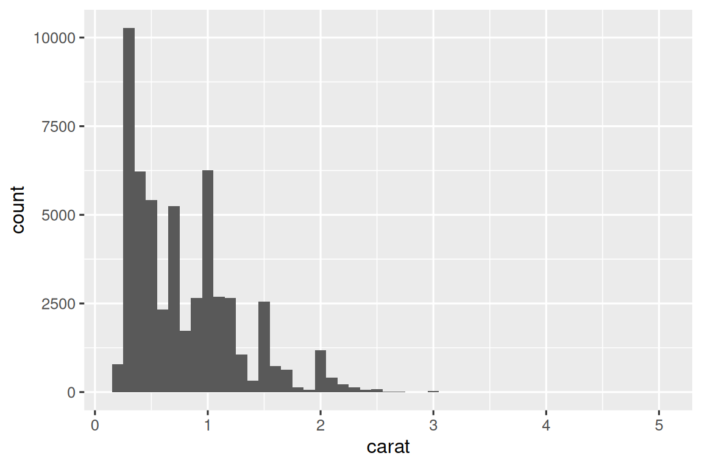
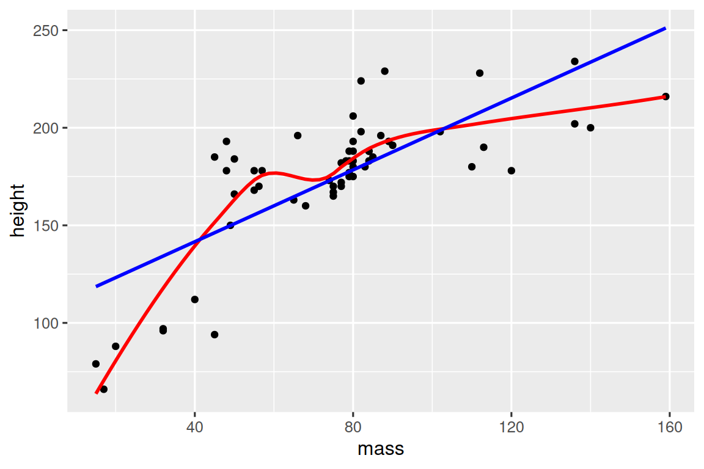
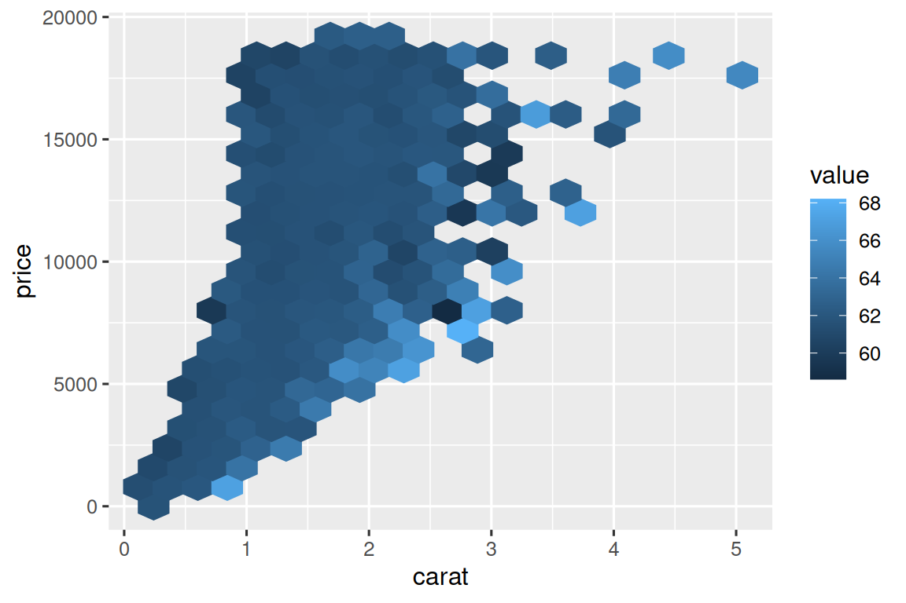
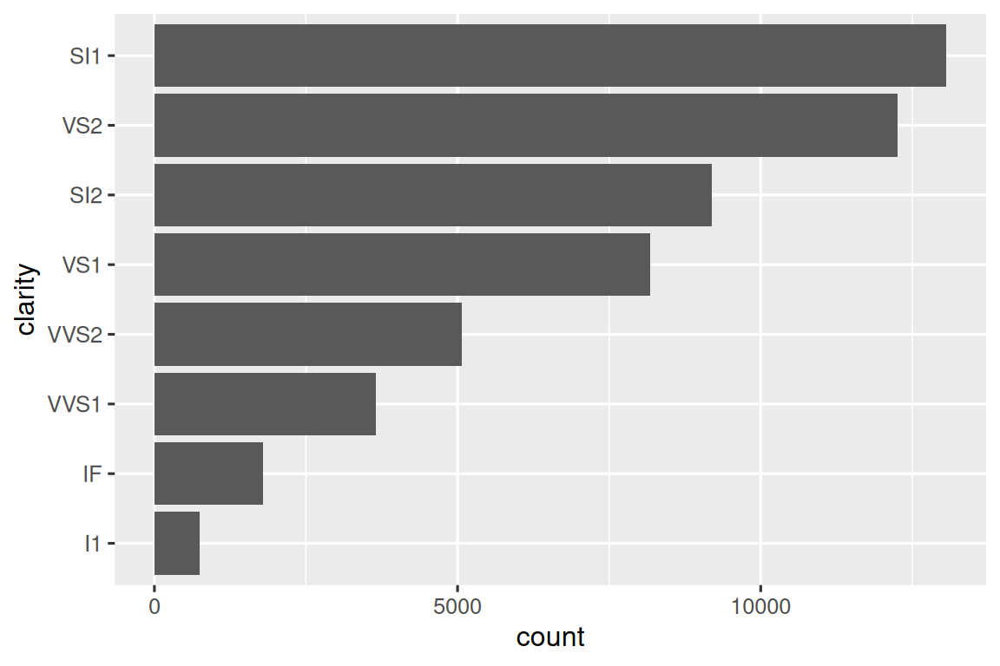
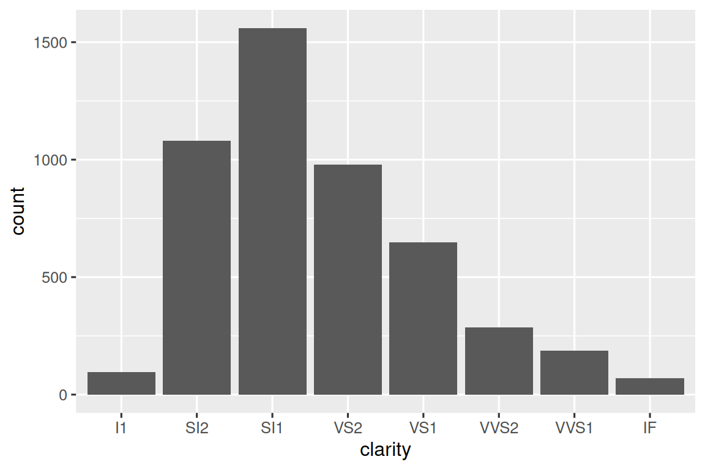
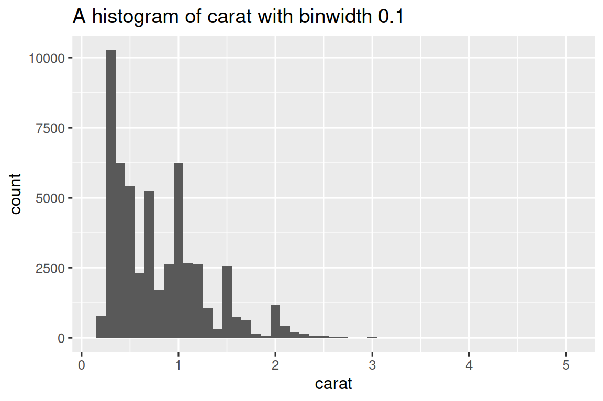

25 Funciones
25.1 Introducción
Una de las mejores formas de mejorar su alcance como científico de datos es escribir funciones. Las funciones le permiten automatizar tareas comunes de una manera más potente y general que copiar y pegar. Escribir una función tiene cuatro grandes ventajas sobre el uso de copiar y pegar:
Puede dar a una función un nombre sugerente que haga que su código sea más fácil de entender.
A medida que cambian los requisitos, solo necesita actualizar el código en un lugar, en lugar de muchos.
Elimina la posibilidad de cometer errores incidentales al copiar y pegar (es decir, actualizar el nombre de una variable en un lugar, pero no en otro).
Hace que sea más fácil reutilizar el trabajo de un proyecto a otro, aumentando su productividad con el tiempo.
Una buena regla general es considerar escribir una función siempre que haya copiado y pegado un bloque de código más de dos veces (es decir, ahora tiene tres copias del mismo código). En este capítulo, aprenderá acerca de tres tipos útiles de funciones:
- Las funciones vectoriales toman uno o más vectores como entrada y devuelven un vector como salida.
- Las funciones de marco de datos toman un marco de datos como entrada y devuelven un marco de datos como salida.
- Funciones gráficas que toman un marco de datos como entrada y devuelven un gráfico como salida.
Cada una de estas secciones incluye muchos ejemplos para ayudarlo a generalizar los patrones que ve. Estos ejemplos no serían posibles sin la ayuda de la gente de Twitter, y le recomendamos que siga los enlaces en el comentario para ver inspiraciones originales. También puede leer los tweets motivadores originales para funciones generales y funciones de gráficas para ver aún más funciones.
25.1.1 Requisitos previos
Agruparemos una variedad de funciones de todo el tidyverse. También usaremos nycflights13 como fuente de datos familiares para usar nuestras funciones.
25.2 Funciones vectoriales
Comenzaremos con las funciones vectoriales: funciones que toman uno o más vectores y devuelven un resultado vectorial. Por ejemplo, eche un vistazo a este código. ¿Qué hace?
df <- tibble(
a = rnorm(5),
b = rnorm(5),
c = rnorm(5),
d = rnorm(5),
)
df |> mutate(
a = (a - min(a, na.rm = TRUE)) /
(max(a, na.rm = TRUE) - min(a, na.rm = TRUE)),
b = (b - min(b, na.rm = TRUE)) /
(max(b, na.rm = TRUE) - min(a, na.rm = TRUE)),
c = (c - min(c, na.rm = TRUE)) /
(max(c, na.rm = TRUE) - min(c, na.rm = TRUE)),
d = (d - min(d, na.rm = TRUE)) /
(max(d, na.rm = TRUE) - min(d, na.rm = TRUE)),
)
#> # A tibble: 5 × 4
#> a b c d
#> <dbl> <dbl> <dbl> <dbl>
#> 1 0.339 2.59 0.291 0
#> 2 0.880 0 0.611 0.557
#> 3 0 1.37 1 0.752
#> 4 0.795 1.37 0 1
#> 5 1 1.34 0.580 0.394Es posible que pueda descifrar que esto cambia la escala de cada columna para tener un rango de 0 a 1. Pero, ¿viste el error? Cuando Hadley escribió este código, cometió un error al copiar y pegar y olvidó cambiar una a por una b. Prevenir este tipo de error es una muy buena razón para aprender a escribir funciones.
25.2.1 Escribiendo una función
Para escribir una función, primero debe analizar su código repetido para determinar qué partes son constantes y qué partes varían. Si tomamos el código anterior y lo extraemos de mutate(), es un poco más fácil ver el patrón porque cada repetición ahora es una línea:
Para hacer esto un poco más claro, podemos reemplazar el bit que varía con █:
(█ - min(█, na.rm = TRUE)) / (max(█, na.rm = TRUE) - min(█, na.rm = TRUE))Para convertir esto en una función necesitas tres cosas:
Un nombre. Aquí usaremos
rescale01porque esta función cambia la escala de un vector para que esté entre 0 y 1.Los argumentos. Los argumentos son cosas que varían según las llamadas y nuestro análisis anterior nos dice que solo tenemos uno. Lo llamaremos
xporque este es el nombre convencional para un vector numérico.El cuerpo**. El cuerpo es el código que se repite en todas las llamadas.
Luego creas una función siguiendo la plantilla:
name <- function(arguments) {
body
}Para este caso que conduce a:
En este punto, puede probar con algunas entradas simples para asegurarse de haber capturado la lógica correctamente:
Entonces puedes reescribir la llamada a mutate() como:
df |> mutate(
a = rescale01(a),
b = rescale01(b),
c = rescale01(c),
d = rescale01(d),
)
#> # A tibble: 5 × 4
#> a b c d
#> <dbl> <dbl> <dbl> <dbl>
#> 1 0.339 1 0.291 0
#> 2 0.880 0 0.611 0.557
#> 3 0 0.530 1 0.752
#> 4 0.795 0.531 0 1
#> 5 1 0.518 0.580 0.394(En Capítulo 26, aprenderá a usar across() para reducir aún más la duplicación, por lo que todo lo que necesita es df |> mutate(across(a:d, rescale01))).
25.2.2 Mejorando nuestra función
Puede notar que la función rescale01() hace un trabajo innecesario — en lugar de calcular min() dos veces y max() una vez, podríamos calcular tanto el mínimo como el máximo en un solo paso con range( ):
rescale01 <- function(x) {
rng <- range(x, na.rm = TRUE)
(x - rng[1]) / (rng[2] - rng[1])
}O puede probar esta función en un vector que incluye un valor infinito:
x <- c(1:10, Inf)
rescale01(x)
#> [1] 0 0 0 0 0 0 0 0 0 0 NaNEse resultado no es particularmente útil, por lo que podríamos pedirle a range() que ignore valores infinitos:
rescale01 <- function(x) {
rng <- range(x, na.rm = TRUE, finite = TRUE)
(x - rng[1]) / (rng[2] - rng[1])
}
rescale01(x)
#> [1] 0.0000000 0.1111111 0.2222222 0.3333333 0.4444444 0.5555556 0.6666667
#> [8] 0.7777778 0.8888889 1.0000000 InfEstos cambios ilustran un beneficio importante de las funciones: debido a que hemos movido el código repetido a una función, solo necesitamos hacer el cambio en un lugar.
25.2.3 Funciones mutate
Ahora que tienes la idea básica de las funciones, echemos un vistazo a un montón de ejemplos. Comenzaremos mirando las funciones de “mutate”, es decir, funciones que funcionan bien dentro de mutate() y filter() porque devuelven una salida de la misma longitud que la entrada.
Comencemos con una variación simple de rescale01(). Tal vez quiera calcular el puntaje Z, reescalar un vector para que tenga una media de cero y una desviación estándar de uno:
O tal vez quieras terminar un case_when() sencillo y darle un nombre útil. Por ejemplo, esta función clamp() asegura que todos los valores de un vector se encuentran entre un mínimo o un máximo:
clamp <- function(x, min, max) {
case_when(
x < min ~ min,
x > max ~ max,
.default = x
)
}
clamp(1:10, min = 3, max = 7)
#> [1] 3 3 3 4 5 6 7 7 7 7Por supuesto, las funciones no solo necesitan trabajar con variables numéricas. Es posible que desee realizar una manipulación repetida de cadenas. Tal vez necesites hacer el primer carácter en mayúsculas:
first_upper <- function(x) {
str_sub(x, 1, 1) <- str_to_upper(str_sub(x, 1, 1))
x
}
first_upper("hello")
#> [1] "Hello"O tal vez desee eliminar los signos de porcentaje, las comas y los signos de dólar de una cadena antes de convertirla en un número:
# https://twitter.com/NVlabormarket/status/1571939851922198530
clean_number <- function(x) {
is_pct <- str_detect(x, "%")
num <- x |>
str_remove_all("%") |>
str_remove_all(",") |>
str_remove_all(fixed("$")) |>
as.numeric()
if_else(is_pct, num / 100, num)
}
clean_number("$12,300")
#> [1] 12300
clean_number("45%")
#> [1] 0.45A veces, sus funciones estarán altamente especializadas para un paso de análisis de datos. Por ejemplo, si tiene un montón de variables que registran valores faltantes como 997, 998 o 999, puede escribir una función para reemplazarlos con NA:
Nos hemos centrado en ejemplos que toman un solo vector porque creemos que son los más comunes. Pero no hay razón para que su función no pueda tomar múltiples entradas de vectores.
25.2.4 Funciones summary
Otra familia importante de funciones vectoriales son las funciones de resumen, funciones que devuelven un único valor para usar en summarize(). A veces, esto puede ser simplemente una cuestión de establecer uno o dos argumentos predeterminados:
commas <- function(x) {
str_flatten(x, collapse = ", ", last = " and ")
}
commas(c("cat", "dog", "pigeon"))
#> [1] "cat, dog and pigeon"O podría terminar un cálculo simple, como el coeficiente de variación, que divide la desviación estándar por la media:
O tal vez solo quiera hacer que un patrón común sea más fácil de recordar dándole un nombre fácil de recordar:
También puede escribir funciones con múltiples entradas vectoriales. Por ejemplo, tal vez desee calcular el error de predicción absoluto medio para ayudarlo a comparar las predicciones del modelo con los valores reales:
Una vez que comience a escribir funciones, hay dos accesos directos de RStudio que son muy útiles:
Para encontrar la definición de una función que hayas escrito, coloca el cursor sobre el nombre de la función y presiona
F2.Para saltar rápidamente a una función, presione
Ctrl + .para abrir el archivo difuso y el buscador de funciones y escriba las primeras letras del nombre de su función. También puede navegar a archivos, secciones en Quarto y más, lo que la convierte en una herramienta de navegación muy útil.
25.2.5 Ejercicios
-
Practique convertir los siguientes fragmentos de código en funciones. Piensa en lo que hace cada función. ¿Como lo llamarias? ¿Cuántos argumentos necesita?
En la segunda variante de
rescale01(), los valores infinitos se dejan sin cambios. ¿Puedes reescribirrescale01()para que-Infse asigne a 0 eInfse asigne a 1?Dado un vector de fechas de nacimiento, escribe una función para calcular la edad en años.
Escriba sus propias funciones para calcular la varianza y la asimetría de un vector numérico. Puede buscar las definiciones en Wikipedia o en otro lugar.
Escriba
both_na(), una función de resumen que toma dos vectores de la misma longitud y devuelve el número de posiciones que tienen unNAen ambos vectores.-
Lea la documentación para averiguar qué hacen las siguientes funciones. ¿Por qué son útiles a pesar de que son tan cortos?
is_directory <- function(x) { file.info(x)$isdir } is_readable <- function(x) { file.access(x, 4) == 0 }
25.3 Funciones de data frame
Las funciones vectoriales son útiles para extraer código que se repite dentro de un verbo dplyr. Pero a menudo también repetirá los verbos, particularmente dentro de un pipe grande. Cuando se dé cuenta de que está copiando y pegando varios verbos varias veces, podría pensar en escribir una función de data frame. Las funciones de data frame funcionan como los verbos dplyr: toman un data frame como primer argumento, algunos argumentos adicionales que dicen qué hacer con él y devuelven un data frame o un vector.
Para permitirle escribir una función que use verbos dplyr, primero le presentaremos el desafío de la indirección y cómo puede superarlo abrazando, { }. Con esta teoría en su haber, le mostraremos un montón de ejemplos para ilustrar lo que podría hacer con ella.
25.3.1 Evaluación indirecta y ordenada
Cuando comienza a escribir funciones que usan verbos dplyr, rápidamente se encuentra con el problema de la indirección. Ilustremos el problema con una función muy simple: grouped_mean(). El objetivo de esta función es calcular la media de mean_var agrupada por group_var:
Si lo intentamos y lo usamos, obtenemos un error:
diamonds |> grouped_mean(cut, carat)
#> Error in `group_by()`:
#> ! Must group by variables found in `.data`.
#> ✖ Column `group_var` is not found.Para hacer el problema un poco más claro, podemos usar un marco de datos inventado:
df <- tibble(
mean_var = 1,
group_var = "g",
group = 1,
x = 10,
y = 100
)
df |> grouped_mean(group, x)
#> # A tibble: 1 × 2
#> group_var `mean(mean_var)`
#> <chr> <dbl>
#> 1 g 1
df |> grouped_mean(group, y)
#> # A tibble: 1 × 2
#> group_var `mean(mean_var)`
#> <chr> <dbl>
#> 1 g 1Independientemente de cómo llamemos a grouped_mean(), siempre hace df |> group_by(group_var) |> resume(mean(mean_var)), en lugar de df |> group_by(group) |> resume(mean(x) ) o df |> group_by(group) |> resume(mean(y)). Este es un problema de direccionamiento indirecto, y surge porque dplyr usa evaluación ordenada para permitirle referirse a los nombres de las variables dentro de su marco de datos sin ningún tratamiento especial.
La evaluación ordenada es excelente el 95% de las veces porque hace que sus análisis de datos sean muy concisos, ya que nunca tiene que decir de qué marco de datos proviene una variable; es obvio por el contexto. La desventaja de la evaluación ordenada surge cuando queremos envolver el código tidyverse repetido en una función. Aquí necesitamos alguna forma de decirle a group_mean() y summarize() que no traten group_var y mean_var como el nombre de las variables, sino que busquen dentro de ellas la variable que realmente queremos usar.
La evaluación ordenada incluye una solución a este problema llamada abrazar 🤗. Abrazar una variable significa envolverla entre llaves para que (por ejemplo) var se convierta en { var }. Abrazar una variable le dice a dplyr que use el valor almacenado dentro del argumento, no el argumento como el nombre literal de la variable. Una forma de recordar lo que está pasando es pensar en { } como mirar hacia abajo en un túnel — { var } hará que una función dplyr mire dentro de var en lugar de buscar una variable llamada var.
Entonces, para hacer que grouped_mean() funcione, necesitamos rodear group_var y mean_var con { }:
¡Éxito!
25.3.2 ¿Cuándo abrazar?
Entonces, el desafío clave al escribir funciones de data frame es descubrir qué argumentos deben adoptarse. Afortunadamente, esto es fácil porque puedes buscarlo en la documentación 😄. Hay dos términos para buscar en los documentos que corresponden a los dos subtipos más comunes de evaluación ordenada:
Data-masking (Enmascaramiento de datos): esto se usa en funciones como
arrange(),filter()ysummarize()que calculan con variables.Tidy-selection (Selección ordenada): esto se usa para funciones como
select(),relocate()yrename()que seleccionan variables.
Su intuición sobre qué argumentos usan una evaluación ordenada debería ser buena para muchas funciones comunes — solo piense si puede calcular (por ejemplo, x + 1) o seleccionar (por ejemplo, a:x).
En las siguientes secciones, exploraremos los tipos de funciones útiles que podría escribir una vez que comprenda la adopción.
25.3.3 Casos de uso comunes
Si normalmente realiza el mismo conjunto de resúmenes cuando realiza la exploración inicial de datos, podría considerar incluirlos en una función de ayuda:
summary6 <- function(data, var) {
data |> summarize(
min = min({{ var }}, na.rm = TRUE),
mean = mean({{ var }}, na.rm = TRUE),
median = median({{ var }}, na.rm = TRUE),
max = max({{ var }}, na.rm = TRUE),
n = n(),
n_miss = sum(is.na({{ var }})),
.groups = "drop"
)
}
diamonds |> summary6(carat)
#> # A tibble: 1 × 6
#> min mean median max n n_miss
#> <dbl> <dbl> <dbl> <dbl> <int> <int>
#> 1 0.2 0.798 0.7 5.01 53940 0(Cada vez que envuelve summarize() en un asistente, creemos que es una buena práctica configurar .groups = "drop" para evitar el mensaje y dejar los datos en un estado desagrupado).
Lo bueno de esta función es que, debido a que envuelve summarize(), puede usarla en datos agrupados:
diamonds |>
group_by(cut) |>
summary6(carat)
#> # A tibble: 5 × 7
#> cut min mean median max n n_miss
#> <ord> <dbl> <dbl> <dbl> <dbl> <int> <int>
#> 1 Fair 0.22 1.05 1 5.01 1610 0
#> 2 Good 0.23 0.849 0.82 3.01 4906 0
#> 3 Very Good 0.2 0.806 0.71 4 12082 0
#> 4 Premium 0.2 0.892 0.86 4.01 13791 0
#> 5 Ideal 0.2 0.703 0.54 3.5 21551 0Además, dado que los argumentos para resumir son un enmascaramiento de datos, también significa que el argumento var para summary6() es un enmascaramiento de datos. Eso significa que también puede resumir las variables calculadas:
diamonds |>
group_by(cut) |>
summary6(log10(carat))
#> # A tibble: 5 × 7
#> cut min mean median max n n_miss
#> <ord> <dbl> <dbl> <dbl> <dbl> <int> <int>
#> 1 Fair -0.658 -0.0273 0 0.700 1610 0
#> 2 Good -0.638 -0.133 -0.0862 0.479 4906 0
#> 3 Very Good -0.699 -0.164 -0.149 0.602 12082 0
#> 4 Premium -0.699 -0.125 -0.0655 0.603 13791 0
#> 5 Ideal -0.699 -0.225 -0.268 0.544 21551 0Para resumir varias variables, deberá esperar hasta Sección 26.2, donde aprenderá a usar across().
Otra función auxiliar popular summarize() es una versión de count() que también calcula proporciones:
# https://twitter.com/Diabb6/status/1571635146658402309
count_prop <- function(df, var, sort = FALSE) {
df |>
count({{ var }}, sort = sort) |>
mutate(prop = n / sum(n))
}
diamonds |> count_prop(clarity)
#> # A tibble: 8 × 3
#> clarity n prop
#> <ord> <int> <dbl>
#> 1 I1 741 0.0137
#> 2 SI2 9194 0.170
#> 3 SI1 13065 0.242
#> 4 VS2 12258 0.227
#> 5 VS1 8171 0.151
#> 6 VVS2 5066 0.0939
#> # ℹ 2 more rowsEsta función tiene tres argumentos: df, var y sort, y solo var debe aceptarse porque se pasa a count(), que utiliza el enmascaramiento de datos para todas las variables. Tenga en cuenta que usamos un valor predeterminado para sort, de modo que si el usuario no proporciona su propio valor, el valor predeterminado será FALSE.
O tal vez quiera encontrar los valores únicos ordenados de una variable para un subconjunto de los datos. En lugar de proporcionar una variable y un valor para realizar el filtrado, permitiremos que el usuario proporcione una condición:
unique_where <- function(df, condition, var) {
df |>
filter({{ condition }}) |>
distinct({{ var }}) |>
arrange({{ var }})
}
# Encuentra todos los destinos en diciembre
flights |> unique_where(month == 12, dest)
#> # A tibble: 96 × 1
#> dest
#> <chr>
#> 1 ABQ
#> 2 ALB
#> 3 ATL
#> 4 AUS
#> 5 AVL
#> 6 BDL
#> # ℹ 90 more rowsAquí adoptamos condition porque se pasa a filter() y var porque se pasa a distinct() y arrange().
Hicimos todos estos ejemplos para tomar un data frame como el primer argumento, pero si está trabajando repetidamente con los mismos datos, puede tener sentido codificarlo. Por ejemplo, la siguiente función siempre funciona con el conjunto de datos de vuelos y siempre selecciona time_hour, carrier y flight, ya que forman la clave principal compuesta que le permite identificar una fila.
25.3.4 Enmascaramiento de datos vs selección ordenada
A veces desea seleccionar variables dentro de una función que usa enmascaramiento de datos. Por ejemplo, imagina que quieres escribir un count_missing() que cuente el número de observaciones que faltan en las filas. Puedes intentar escribir algo como:
count_missing <- function(df, group_vars, x_var) {
df |>
group_by({{ group_vars }}) |>
summarize(
n_miss = sum(is.na({{ x_var }})),
.groups = "drop"
)
}
flights |>
count_missing(c(year, month, day), dep_time)
#> Error in `group_by()`:
#> ℹ In argument: `c(year, month, day)`.
#> Caused by error:
#> ! `c(year, month, day)` must be size 336776 or 1, not 1010328.Esto no funciona porque group_by() usa enmascaramiento de datos, no selección ordenada. Podemos solucionar ese problema usando la práctica función pick(), que le permite usar la selección ordenada dentro de las funciones de enmascaramiento de datos:
count_missing <- function(df, group_vars, x_var) {
df |>
group_by(pick({{ group_vars }})) |>
summarize(
n_miss = sum(is.na({{ x_var }})),
.groups = "drop"
)
}
flights |>
count_missing(c(year, month, day), dep_time)
#> # A tibble: 365 × 4
#> year month day n_miss
#> <int> <int> <int> <int>
#> 1 2013 1 1 4
#> 2 2013 1 2 8
#> 3 2013 1 3 10
#> 4 2013 1 4 6
#> 5 2013 1 5 3
#> 6 2013 1 6 1
#> # ℹ 359 more rowsOtro uso conveniente de pick() es hacer una tabla de cuentas en 2D. Aquí contamos usando todas las variables en las filas y columnas, luego usamos pivot_wider() para reorganizar los conteos en una cuadrícula:
# https://twitter.com/pollicipes/status/1571606508944719876
count_wide <- function(data, rows, cols) {
data |>
count(pick(c({{ rows }}, {{ cols }}))) |>
pivot_wider(
names_from = {{ cols }},
values_from = n,
names_sort = TRUE,
values_fill = 0
)
}
diamonds |> count_wide(c(clarity, color), cut)
#> # A tibble: 56 × 7
#> clarity color Fair Good `Very Good` Premium Ideal
#> <ord> <ord> <int> <int> <int> <int> <int>
#> 1 I1 D 4 8 5 12 13
#> 2 I1 E 9 23 22 30 18
#> 3 I1 F 35 19 13 34 42
#> 4 I1 G 53 19 16 46 16
#> 5 I1 H 52 14 12 46 38
#> 6 I1 I 34 9 8 24 17
#> # ℹ 50 more rowsSi bien nuestros ejemplos se han centrado principalmente en dplyr, la evaluación ordenada también respalda a tidyr, y si observa los documentos pivot_wider(), puede ver que names_from usa una selección ordenada.
25.3.5 Ejercicios
-
Usando los conjuntos de datos de nycflights13, escriba una función que:
-
Encuentra todos los vuelos que fueron cancelados (es decir,
is.na(arr_time)) o retrasados por más de una hora.flights |> filter_severe() -
Cuenta el número de vuelos cancelados y el número de vuelos retrasados por más de una hora.
flights |> group_by(dest) |> summarize_severe() -
Encuentra todos los vuelos que fueron cancelados o retrasados por más de un número de horas proporcionado por el usuario:
flights |> filter_severe(hours = 2) -
Resume el clima para calcular el mínimo, la media y el máximo de una variable proporcionada por el usuario:
weather |> summarize_weather(temp) -
Convierte la variable proporcionada por el usuario que utiliza la hora del reloj (por ejemplo,
dep_time,arr_time, etc.) en una hora decimal (es decir, hours + (minutes/60)).flights |> standardize_time(sched_dep_time)
-
Para cada una de las siguientes funciones, enumere todos los argumentos que usan evaluación ordenada y describa si usan enmascaramiento de datos o selección ordenada:
distinct(),count(),group_by(),rename_with(),slice_min(),slice_sample().-
Generalice la siguiente función para que pueda proporcionar cualquier número de variables para contar.
25.4 Funciones de gráficas
En lugar de devolver un data frame, es posible que desee devolver un gráfico. Afortunadamente, puedes usar las mismas técnicas con ggplot2, porque aes() es una función de enmascaramiento de datos. Por ejemplo, imagina que estás haciendo muchos histogramas:
diamonds |>
ggplot(aes(x = carat)) +
geom_histogram(binwidth = 0.1)
diamonds |>
ggplot(aes(x = carat)) +
geom_histogram(binwidth = 0.05)¿No sería bueno si pudieras envolver esto en una función de histograma? Esto es muy fácil una vez que sabe que aes () es una función de enmascaramiento de datos y debe adoptar:
histogram <- function(df, var, binwidth = NULL) {
df |>
ggplot(aes(x = {{ var }})) +
geom_histogram(binwidth = binwidth)
}
diamonds |> histogram(carat, 0.1)
Tenga en cuenta que histogram() devuelve un gráfico ggplot2, lo que significa que aún puede agregar componentes adicionales si lo desea. Solo recuerda cambiar de |> a +:
diamonds |>
histogram(carat, 0.1) +
labs(x = "Size (in carats)", y = "Number of diamonds")25.4.1 Más variables
Es sencillo agregar más variables a la mezcla. Por ejemplo, tal vez desee una manera fácil de observar si un conjunto de datos es lineal o no al superponer una línea suave y una línea recta:
# https://twitter.com/tyler_js_smith/status/1574377116988104704
linearity_check <- function(df, x, y) {
df |>
ggplot(aes(x = {{ x }}, y = {{ y }})) +
geom_point() +
geom_smooth(method = "loess", formula = y ~ x, color = "red", se = FALSE) +
geom_smooth(method = "lm", formula = y ~ x, color = "blue", se = FALSE)
}
starwars |>
filter(mass < 1000) |>
linearity_check(mass, height)
O tal vez desee una alternativa a los diagramas de dispersión de colores para conjuntos de datos muy grandes en los que la superposición de gráficos es un problema:
# https://twitter.com/ppaxisa/status/1574398423175921665
hex_plot <- function(df, x, y, z, bins = 20, fun = "mean") {
df |>
ggplot(aes(x = {{ x }}, y = {{ y }}, z = {{ z }})) +
stat_summary_hex(
aes(color = after_scale(fill)), # make border same color as fill
bins = bins,
fun = fun,
)
}
diamonds |> hex_plot(carat, price, depth)
25.4.2 Combinando con otros tidyverse
Algunos de los ayudantes más útiles combinan una pizca de manipulación de datos con ggplot2. Por ejemplo, si desea hacer un gráfico de barras verticales en el que ordene automáticamente las barras en orden de frecuencia usando fct_infreq(). Dado que el gráfico de barras es vertical, también debemos invertir el orden habitual para obtener los valores más altos en la parte superior:
sorted_bars <- function(df, var) {
df |>
mutate({{ var }} := fct_rev(fct_infreq({{ var }}))) |>
ggplot(aes(y = {{ var }})) +
geom_bar()
}
diamonds |> sorted_bars(clarity)
Tenemos que usar un nuevo operador aquí, := (comúnmente conocido como “operador morsa”), porque estamos generando el nombre de la variable en función de los datos proporcionados por el usuario. Los nombres de las variables van en el lado izquierdo de =, pero la sintaxis de R no permite nada a la izquierda de = excepto un solo nombre literal. Para solucionar este problema, usamos el operador especial := que la evaluación ordenada trata exactamente de la misma manera que =.
O tal vez desee que sea más fácil dibujar un gráfico de barras solo para un subconjunto de los datos:
conditional_bars <- function(df, condition, var) {
df |>
filter({{ condition }}) |>
ggplot(aes(x = {{ var }})) +
geom_bar()
}
diamonds |> conditional_bars(cut == "Good", clarity)
También puede ser creativo y mostrar resúmenes de datos de otras maneras. Puede encontrar una aplicación interesante en https://gist.github.com/Gshotwell/b19ef520b6d56f61a830fabb3454965b; utiliza las etiquetas de los ejes para mostrar el valor más alto. A medida que aprenda más sobre ggplot2, el poder de sus funciones seguirá aumentando.
Terminaremos con un caso más complicado: etiquetar las parcelas que creas.
25.4.3 Etiquetado
¿Recuerdas la función de histograma que te mostramos antes?
histogram <- function(df, var, binwidth = NULL) {
df |>
ggplot(aes(x = {{ var }})) +
geom_histogram(binwidth = binwidth)
}¿No sería bueno si pudiéramos etiquetar la salida con la variable y el ancho del contenedor que se usó? Para hacerlo, vamos a tener que pasar por debajo de las sábanas de la evaluación ordenada y usar una función del paquete del que aún no hemos hablado: rlang. rlang es un paquete de bajo nivel que es utilizado por casi todos los demás paquetes en el tidyverse porque implementa una evaluación ordenada (así como muchas otras herramientas útiles).
Para resolver el problema de etiquetado podemos usar rlang::englue(). Esto funciona de manera similar a str_glue(), por lo que cualquier valor envuelto en { } se insertará en la cadena. Pero también entiende { }, que inserta automáticamente el nombre de variable apropiado:
histogram <- function(df, var, binwidth) {
label <- rlang::englue("A histogram of {{var}} with binwidth {binwidth}")
df |>
ggplot(aes(x = {{ var }})) +
geom_histogram(binwidth = binwidth) +
labs(title = label)
}
diamonds |> histogram(carat, 0.1)
Puede usar el mismo enfoque en cualquier otro lugar donde desee proporcionar una cadena en un gráfico ggplot2.
25.4.4 Ejercicios
Cree una función de trazado enriquecida implementando de forma incremental cada uno de los pasos a continuación:
Dibuje un diagrama de dispersión dado el conjunto de datos y las variables
xey.Agregue una línea de mejor ajuste (es decir, un modelo lineal sin errores estándar).
Agregue un título.
25.5 Estilo
A R no le importa cómo se llamen sus funciones o argumentos, pero los nombres marcan una gran diferencia para los humanos. Idealmente, el nombre de su función será corto, pero evocará claramente lo que hace la función. ¡Eso es difícil! Pero es mejor ser claro que breve, ya que el autocompletado de RStudio facilita la escritura de nombres largos.
Generalmente, los nombres de las funciones deben ser verbos y los argumentos deben ser sustantivos. Hay algunas excepciones: los sustantivos están bien si la función calcula un sustantivo muy conocido (es decir, mean() es mejor que compute_mean()), o acceder a alguna propiedad de un objeto (es decir, coef() es mejor que obtener_coeficientes()). Use su mejor juicio y no tenga miedo de cambiar el nombre de una función si descubre un nombre mejor más tarde.
# Demasiado corto
f()
# Ni verbo ni descriptivo
my_awesome_function()
# Largo pero no claro
impute_missing()
collapse_years()A R tampoco le importa cómo usa el espacio en blanco en sus funciones, pero a los futuros lectores sí. Continúe siguiendo las reglas de Capítulo 4. Además, function() siempre debe ir seguida de corchetes ondulados ({}), y el contenido debe tener una sangría de dos espacios adicionales. Esto hace que sea más fácil ver la jerarquía en su código rozando el margen izquierdo.
# Faltan los dos espacios extras
density <- function(color, facets, binwidth = 0.1) {
diamonds |>
ggplot(aes(x = carat, y = after_stat(density), color = {{ color }})) +
geom_freqpoly(binwidth = binwidth) +
facet_wrap(vars({{ facets }}))
}
# Canalización con sangría incorrecta
density <- function(color, facets, binwidth = 0.1) {
diamonds |>
ggplot(aes(x = carat, y = after_stat(density), color = {{ color }})) +
geom_freqpoly(binwidth = binwidth) +
facet_wrap(vars({{ facets }}))
}Como puede ver, recomendamos poner espacios adicionales dentro de { }. Esto hace que sea muy obvio que algo inusual está sucediendo.
25.5.1 Ejercicios
-
Lea el código fuente de cada una de las siguientes dos funciones, averigüe lo que hacen y luego piense en mejores nombres.
f1 <- function(string, prefix) { str_sub(string, 1, str_length(prefix)) == prefix } f3 <- function(x, y) { rep(y, length.out = length(x)) } Tome una función que haya escrito recientemente y dedique 5 minutos a pensar en un mejor nombre para ella y sus argumentos.
Explique por qué
norm_r(),norm_d()etc. sería mejor quernorm(),dnorm(). Haga un caso para lo contrario. ¿Cómo podría hacer los nombres aún más claros?
25.6 Resumen
En este capítulo, aprendió a escribir funciones para tres escenarios útiles: crear un vector, crear data frame o crear un gráfico. En el camino, vio muchos ejemplos, que con suerte comenzaron a hacer fluir su creatividad y le dieron algunas ideas sobre dónde las funciones podrían ayudar a su código de análisis.
Solo le hemos mostrado lo mínimo para comenzar con las funciones y hay mucho más que aprender. Algunos lugares para aprender más son:
- Para obtener más información sobre la programación con evaluación ordenada, consulte recetas útiles en programación con dplyr y programación con tidyr y obtenga más información sobre la teoría en ¿Qué es el enmascaramiento de datos y por qué necesito {{?.
- Para obtener más información sobre cómo reducir la duplicación en su código ggplot2, lea el capítulo Programación con ggplot2 del libro de ggplot2.
- Para obtener más consejos sobre el estilo de las funciones, consulta la guía de estilo de tidyverse.
En el próximo capítulo, nos sumergiremos en la iteración, que le brinda más herramientas para reducir la duplicación de código.